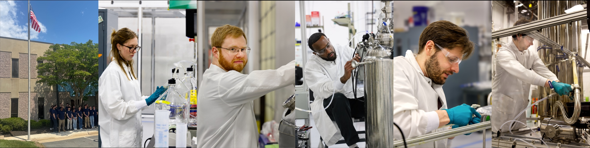

Made in America. Made by Biology. Made on Demand.
Capra builds and operates modular biomanufacturing facilities to produce high-value chemicals domestically and on demand. We sell into pharmaceuticals, personal care, defense, and industrial markets.
Most active pharmaceutical ingredients, specialty chemicals, and feedstocks are produced overseas in giant petroleum-tied refineries. The result is concentrated, fragile, and slow. Vulnerable to shortages, tariffs, and geopolitical shocks.
And it's stiff. Each plant is hard-wired to a single molecule, so when demand shifts the supply chain can't follow. Lines can't pivot. Capacity can't be reallocated. New molecules wait years for a plant.
The U.S. needs a manufacturing base with dynamic responsiveness. Modular, biological, and built where the demand is. Plants that pivot to new molecules in weeks, not years.

Capra partners with corporate strategic partners, off-takers, and formulators — alongside non-dilutive programs like BioMADE — who need a domestic, modular path to high-value chemicals. Get in touch about supply, partnership programs, or a tour of Sterling.